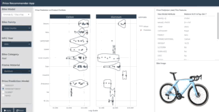

Problem Statement
In the competitive bike manufacturing industry, pricing strategies can significantly impact market share and profitability. A hypothetical bike manufacturer faces the challenge of setting prices that are competitive yet profitable, adapting to market demands without compromising margins. To stay competitive, the manufacturer needs a data-driven approach to dynamically adjust prices based on bike features and market trends.
Solution
The solution proposed is an end-to-end analysis that leverages machine learning models to recommend a competitive pricing strategy. This approach utilizes a detailed dataset with features that influence bike pricing, coupled with advanced analytics to create a robust pricing model. The recommended strategy provides flexibility through multiple models to accommodate different pricing scenarios, from everyday competitive pricing to strategic markups and markdowns.
Implementation
- Data Collection: Data was gathered through web scraping from the Trek bikes website, ensuring a rich dataset for analysis.
Web-scraping script available here.
- Feature Engineering: Bike attributes such as model, year, frame material, and additional features like electrical components and shock presence were encoded. Keywords indicative of special features and parts manufacturers were also extracted to enrich the dataset.
Data prep script available here.
Model Development: Four machine learning models were chosen for price prediction: RANDOM FOREST, XGBOOST, GLMNET (Linear Regression), and MARS (Multivariate Adaptive Regression Splines). Model Training and Validation: Each model was trained using the prepared dataset, validated, and its pricing predictions were compared to actual prices to gauge competitiveness.
Strategy Formulation: The RANDOM FOREST model was designated as the standard “every day” pricing model due to its accurate price predictions. The XGBOOST model was chosen for price markups given its higher price points, while the GLMNET and MARS models were selected for markdown scenarios due to their lower price predictions. Deployment:
Modeling script available here.
- Deployment: A user-friendly shiny app was developed to deploy the analysis. The app allows users to select bike specifications and select a pricing model to receive price recommendations.
Code for shiny app available here.
Shiny App
You can interact with the shiny app here.

Reproducible Code
Reproducible code available in this github repo.